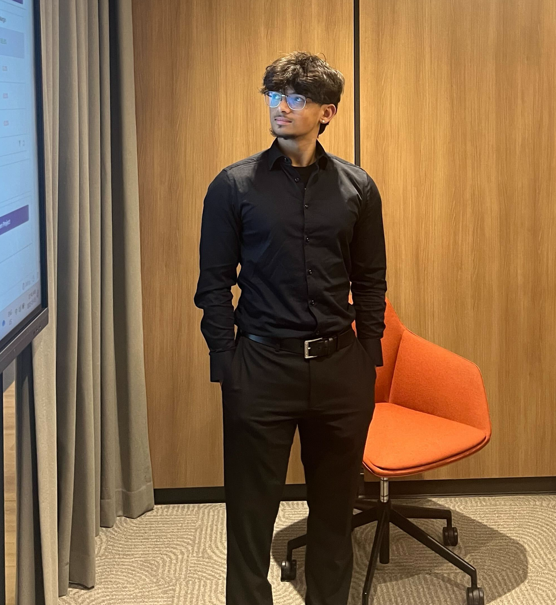

Get To Know More
About Me

Who Am I?
I am a Mechatronics Engineering student at the University of Waterloo with experience in leadership and extracurricular activities. I have a strong foundation in engineering principles and hands-on project design. My interests include automation, software-based projects, and system development. Outside academics, I enjoy working out, basketball, reading, and traveling with my family.